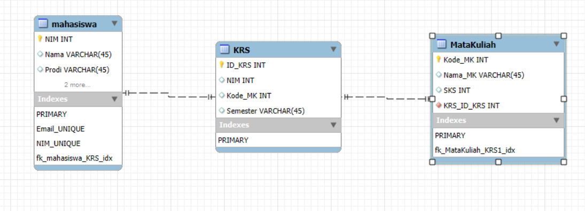
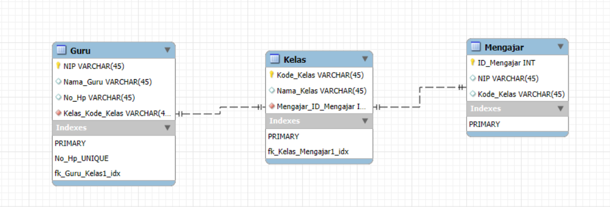
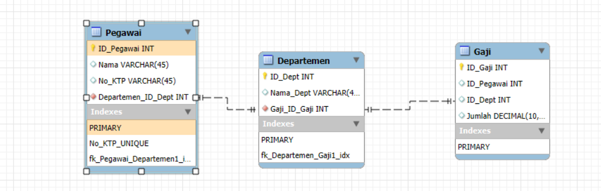

Primary Key, Foreign Key, dan Candidate Key
1. Primary Key
Primary Key adalah atribut unik yang digunakan untuk mengidentifikasi setiap record dalam tabel. Nilainya tidak boleh duplikat dan tidak boleh bernilai NULL.
Contoh ERD:
- Mahasiswa(NIM, Nama, Alamat) → Primary Key: NIM
- Dosen(NIDN, Nama, Prodi) → Primary Key: NIDN
- MataKuliah(Kode_MK, Nama_MK, SKS) → Primary Key: Kode_MK
- Barang(Kode_Barang, Nama_Barang, Harga) → Primary Key: Kode_Barang
2. Foreign Key
Foreign Key adalah atribut yang menjadi penghubung antar tabel. Kolom ini mengambil nilai dari Primary Key tabel lain.
Contoh ERD:
- KRS(NIM, Kode_MK) → Foreign Key: NIM dari Mahasiswa
- KRS(NIM, Kode_MK) → Foreign Key: Kode_MK dari MataKuliah
- Transaksi(Kode_Barang, ID_Pegawai) → Foreign Key: Kode_Barang dari Barang
- Gaji(ID_Pegawai) → Foreign Key: ID_Pegawai dari Pegawai
3. Candidate Key
Candidate Key adalah semua atribut yang bisa dijadikan Primary Key karena bersifat unik dan tidak boleh bernilai NULL.
Contoh ERD:
- Mahasiswa(NIM, Email) → Candidate Key: NIM, Email
- Pegawai(ID_Pegawai, No_KTP) → Candidate Key: ID_Pegawai, No_KTP
- Customer(ID_Customer, No_Telp) → Candidate Key: ID_Customer, No_Telp
- Buku(ISBN, Kode_Buku) → Candidate Key: ISBN, Kode_Buku
Berikut 5 contoh penerapan ERD
contoh 1 Di kampus
contoh 2 Toko online

contoh 3 Sekolah
contoh 4 Perusahaan
contoh 5 Rumah Sakit